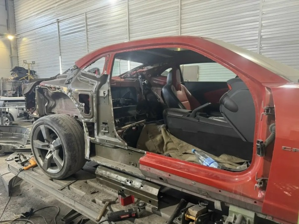
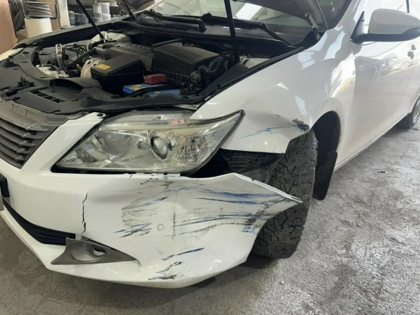
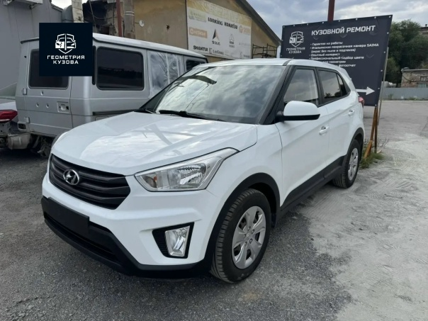

Полуавтомат, аргон, точечная сварка. Выполняем любые сварочные работы по кузову с антикоррозийной обработкой швов.
Фотографии из нашего цеха. Больше проектов — в галерее работ и в группе ВКонтакте.



Кузов автомобиля держится на сварных соединениях: от их качества зависит жёсткость, безопасность и долговечность машины. Сварка нужна при замене порогов, арок, приварных панелей, ремонте днища и силовых элементов. В «ГЕОМЕТРИИ КУЗОВА» на ул. Каслинской 1/1 мы выполняем сварочные работы полуавтоматом, аргоном и точечной сваркой, соблюдая заводские технологии и обязательно обрабатывая швы антикором.
Спектр задач по кузову широкий — от небольшой ремонтной вставки до восстановления силовой структуры:
Для разных задач подходит разное оборудование, и мы подбираем метод под конкретный кузов:
Мы не перегреваем металл: тонкий кузовной металл легко «повести», поэтому работаем короткими швами с контролем температуры и проковкой. Это позволяет сохранить форму панели и избежать деформаций.
Сварное соединение — это место, где металл теряет защитное покрытие и становится уязвим для коррозии. Если после сварки не обработать шов и скрытые полости, ржавчина начнётся именно там и быстро «съест» ремонт изнутри. Мы всегда выполняем полный цикл: зачистка шва, герметизация, грунтование, антикоррозийная обработка скрытых полостей. Кроме того, важно соблюдать заводские точки сварки — от этого зависит жёсткость кузова и его поведение при аварии. При восстановлении Chevrolet Camaro мы выполняли точечную сварку после замены крыла и усилителей, а при ремонте Hyundai Creta после серьёзного ДТП — восстанавливали лонжерон и арку.
Цена зависит от объёма и сложности. Ориентировочные расценки:
| Работа | Цена |
|---|---|
| Сварка небольшого участка (ремвставка) | от 1 000 ₽ |
| Вваривание ремонтной вставки панели | от 3 000 ₽ |
| Сварочные работы по порогу или арке | от 4 500 ₽ |
| Ремонт лонжерона | от 7 000 ₽ |
Срок — от 1 дня. Работы с изготовлением вставок и последующей покраской занимают 2–4 дня.
За 10+ лет мы сварили сотни кузовов разных марок — от Hyundai Solaris до Chevrolet Camaro. В цехе 700 м² есть всё необходимое оборудование, а мастера работают с металлом любой толщины. Мы даём гарантию на сварные работы и ведём фотоотчёт, чтобы вы видели каждый этап без лишних вопросов. Приезжайте на бесплатную дефектовку на ул. Каслинскую 1/1 — оценим, нужна ли сварка и какой объём работ. Звоните: +7 (922) 632-60-30 или +7 (351) 683-12-05. Ежедневно с 10:00 до 20:00.
Сварочные работы начинаются с осмотра: мастер должен увидеть объём повреждений и понять, достаточно ли локальной вставки или требуется менять панель целиком. Вы можете приехать на ул. Каслинскую 1/1 в удобное время или прислать фотографии повреждённой зоны через форму на сайте. Мы назовём стоимость и срок, а после вашего согласия закажем необходимые детали и материалы. В день работ автомобиль проходит дефектовку, сварку, обработку швов и подготовку к покраске — весь цикл выполняется в одном месте, поэтому не нужно возить машину между сервисами.
Присылаете фото повреждения — получаете предварительную оценку.
15 минутПроводим дефектовку, согласовываем работы и финальную стоимость.
30–60 минутВыполняем по этапам, отправляем фотоотчёт на связи.
от 1 дняПроверяете результат, подписываете акт, получаете гарантию.
30 минутПришлите фото повреждения — рассчитаем стоимость и сроки. Или позвоните: +7 (922) 632-60-30, +7 (351) 683-12-05.
Позвонить: +7 (922) 632-60-30 Оценить по фото